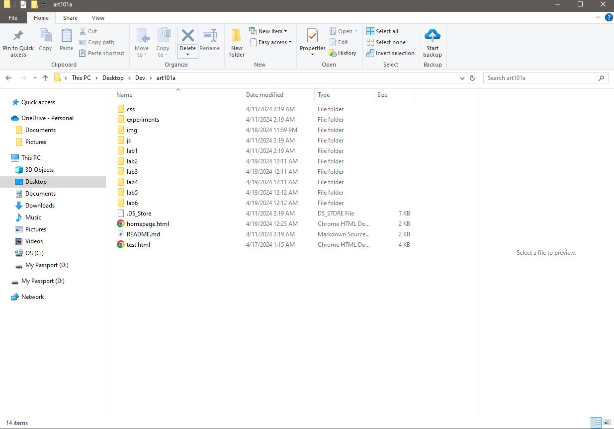
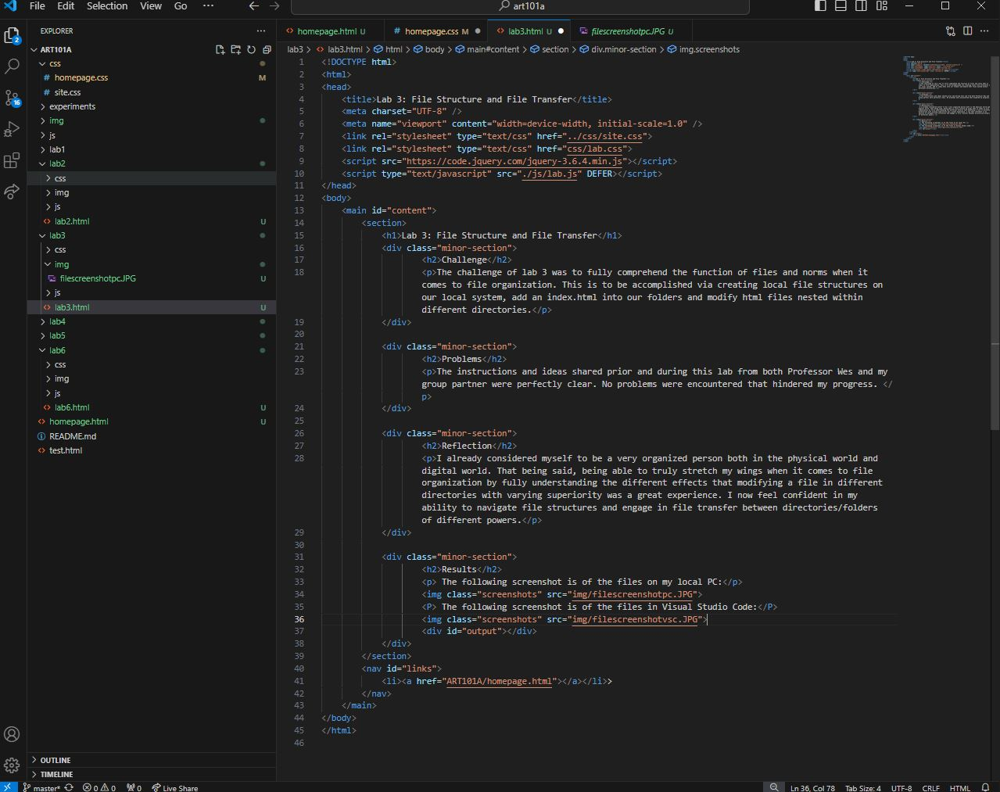

Lab 3: File Structure and File Transfer
Challenge
The challenge of lab 3 was to fully comprehend the function of files and norms when it comes to file organization. This is to be accomplished via creating local file structures on our local system, add an index.html into our folders and modify html files nested within different directories.
Problems
The instructions and ideas shared prior and during this lab from both Professor Wes and my group partner were perfectly clear. No problems were encountered that hindered my progress.
Reflection
I already considered myself to be a very organized person both in the physical world and digital world. That being said, being able to truly stretch my wings when it comes to file organization by fully understanding the different effects that modifying a file in different directories with varying superiority was a great experience. I now feel confident in my ability to navigate file structures and engage in file transfer between directories/folders of different powers.
Results
The following screenshot is of the files on my local PC:
The following screenshot is of the files in Visual Studio Code:
